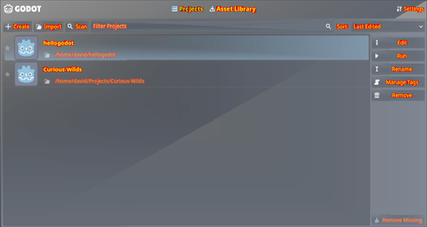

🚧 Under Construction 🚧
Many of the projects and pictures I really want to show you aren't here yet.
But feel free to look around anyway.
My Top Picks
These projects aren't necessarily useful or game changing, but the ones that are very interesting and definitely conversation worthy.
Mepeyew
https://github.com/davnotdev/mepeyew


Some renderings done with Mepeyew
I love modern graphics APIs, but I feel that most of them require you to jump through hoops that really only the professionals should handle.
For example, memory management, pipeline barriers, etc.
Mepeyew was a library I built out of necessity.
On one hand, I wanted the feel of a powerful low level API, but on the other hand, I didn't need the ability to fine tune every aspect of the rendering process.
Mepeyew implements a fairly simple rendering API supporting WebGPU (not WGPU) and vulkan under the hood.
It is higher level than Vulkan but lower level than WGPU making it both lightweight and easy to use.
I implore you to read more on the Github page.
Given the speed at which WebGPU and the Rust ecosystem develops.
Mepeyew should still function fine, but its WebGPU backend and examples may be out of date.
(
winit, used in the examples, breaks its API every few months for some reason)
Godot WebGPU Support
https://github.com/davnotdev/godot/tree/webgpu

This was the first successful rendering of Godot under WebGPU.
The colors look wacky only because WebGPU doesn't support swizzle operations (this is patched in now).
This is a work-in-progress project implementing an experimental WebGPU / WGPU driver for the Godot game engine.
Godot 4's fancy new renderer is quite a bit lower level than what WGPU is designed for.
With WGPU, many prerequisite features for rendering are missing, and the API morphs and evolves spontaneously.
So is WebGPU possible in Godot?
Right now, I would say yes!
The project has been able to weave and dodge previously insurmountable obstacles, with few obstacles remaining.
We'll see how things play out with time.
Once again, this is very much a developing project.
You can find more information by messaging me on the Godot Contributor's Chat.
ROOM
https://github.com/davnotdev/ROOM
SPRIG Game


Gameplay from ROOM, a 3D rasterized game for the SPRIG console.
Back in high school, there was an online community called Hack Club which made little homemade consoles called SPRIGs.
In order to get one, you had to make a game.
Being the graphics nerd I was and still am, I decided to make the first 3D rasterized SPRIG shooter game inspired by DOOM.
In ROOM, your goal is to navigate a maze of walls, picking up med kits while your health slowly drains.
All the while, you must evade and kill the spinning people who come to attack you.
The project features a custom 3D rasterizer with depth, culling, clipping, etc, but no shader support.
Being written in Typescript, you can play the game in the browser.
It obviously fails to run on actual hardware.
I made an attempt to port the game to Rust, but could not overcome the game's memory constraints.
These Rust port attempts eventually manifested into another game called Subway Sprigsters.
🚧 Under Construction 🚧
Useful Libraries / Utilities
Hardware
Cha Cha the Ro(w)ver
 https://github.com/davnotdev/chachatherowver
https://github.com/davnotdev/chachatherowver
At UCLA, I took ENGR 1AR, an amazing class where we (as a team) created an autonomous rover!
This class taught me that even if your software is flawless (our software was not even close to being flawless), a slight variation in the battery's voltage can derail the entire project.
In the end, our rover could mostly navigate the class' obstacle course, but 1 the grabbing mechanism broke and 2 the battery was not strong enough to power the claw's servos.
Overall, a 10/10 experience.
Silly Projects
Treats for the Wicked
https://github.com/davnotdev/treatsforthewicked
This was my submission for Hack Club's Autumn Hackjam 2023.
This game is about committing various crimes to get as much candy as possible.
This is more of a tech demo that a serious game.
I created this game using
mewo and
mepeyew!
I didn't have enough time to hack in a text renderer or much of a renderer at all.
The game is just goofy and not very good at all.
Annoy Roommates
https://github.com/davnotdev/annoy_roommate
When someone approaches me and asks me why coding is useful as a skill, I show them this.
Essentially, this is a basic HTML frontend and Rust backend that when run on my server (an old DELL laptop under my desk), allows me to remotely send sound effects, music, and TTS to my roommates.
It sounds evil, but it does have practical applications ie when someone is locked out of the dorm.
Hackathon / Game Jam Projects
🚧 Under Construction 🚧
Personal Scripts and Configs
This is my junk drawer filled with scripts and configuration files that I use myself.
dotnvim
https://github.com/davnotdev/dotnvim
This is the neovim configuration I have been using for years.
It has been used for web development, low level development, game development, work, note taking, homework...
The list goes on.
Many of the dependencies are outdated since the neovim ecosystem evolves so rapidly.
But if you follow the instructions and use the correct version of neovim, it works perfectly.
In fact, this page was created using it.
This configuration has served me well.
David's Jumpstart Scripts
https://github.com/davnotdev/davids_jumpstart
This is a set of minimal bash scripts that are designed to "jump start" a new Linux server with my code editor and various utilities that aren't typically installed.
Although the project is incomplete, I have successfully used these scripts to jump start UCLA's seasnet and DMA servers.